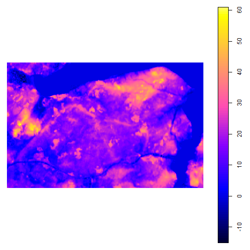
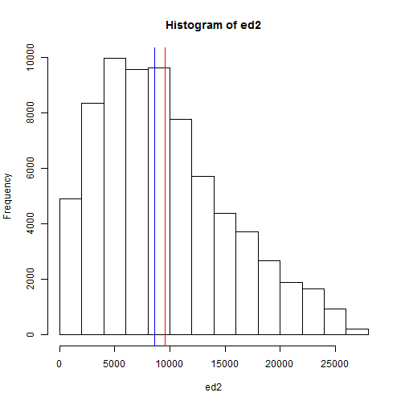
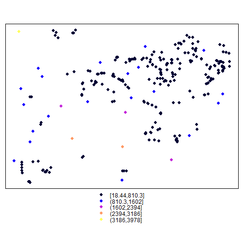
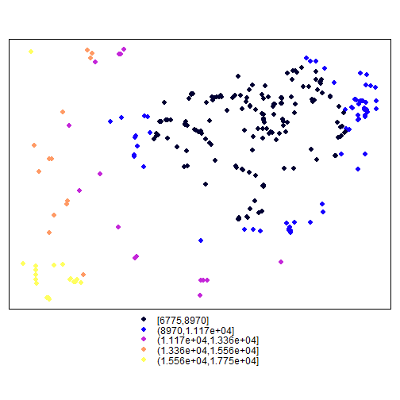

Modelling Interaction
Distances
Oliver Nakoinz, Daniel Knitter
MOSAIC Summer School 2016
Content
- Prerequisites: load data into R, calculate simple geomorphometric measures
- Euclidean distance
- Least-cost distance
Content
- Prerequisites: load data into R, calculate simple geomorphometric measures
- Euclidean distance
- Least-cost distance
1.1 Download DEM
As test data, I download the data provided with the book of Nakoinz and Knitter (2016):
download.file(
url = "https://raw.githubusercontent.com/dakni/mhbil/master/data/dw_gk3_50_ag.asc",
destfile = "dem.asc")
Now, load the file using rgdal package
library(rgdal)
dem <- readGDAL("dem.asc")
1.1 Download DEM
Structure of the dem object
str(dem)
## Formal class 'SpatialGridDataFrame' [package "sp"] with 4 slots
## ..@ data :'data.frame': 204892 obs. of 1 variable:
## .. ..$ band1: num [1:204892] 11.57 10.15 9.91 10.96 11.64 ...
## ..@ grid :Formal class 'GridTopology' [package "sp"] with 3 slots
## .. .. ..@ cellcentre.offset: Named num [1:2] 3550761 6022492
## .. .. .. ..- attr(*, "names")= chr [1:2] "x" "y"
## .. .. ..@ cellsize : num [1:2] 50 50
## .. .. ..@ cells.dim : int [1:2] 566 362
## ..@ bbox : num [1:2, 1:2] 3550736 6022467 3579036 6040567
## .. ..- attr(*, "dimnames")=List of 2
## .. .. ..$ : chr [1:2] "x" "y"
## .. .. ..$ : chr [1:2] "min" "max"
## ..@ proj4string:Formal class 'CRS' [package "sp"] with 1 slot
## .. .. ..@ projargs: chr NA
1.1 Where is the DEM?
What is the meaning of the coordinates?
dem@bbox
## min max
## x 3550736 3579036
## y 6022467 6040567
What is the Spatial Reference System (SRS)?
[= Coordinate Reference System (CRS)]
By Peter Mercator - Own work, Public Domain, https://commons.wikimedia.org/w/index.php?curid=9910926
1.1 Where is the DEM?
What is the meaning of the coordinates?
dem@bbox
## min max
## x 3550736 3579036
## y 6022467 6040567
What is the Spatial Reference System (SRS)?
[= Coordinate Reference System (CRS)]

Von BerndH - selbst erstellt mit Generic Mapping Tools (psbasemap, psxy), Python, GIMP, CC BY-SA 3.0, https://de.wikipedia.org/w/index.php?curid=4186798
1.2 Project DEM and plot
dem@proj4string <- CRS("+init=epsg:5677")
is.projected(dem)
## [1] TRUE
plot(dem)

1.2 Project DEM and plot
Plot using raster package
library("raster")
plot(raster(dem))
## Error in plot(raster(dem)): could not find function "raster"
1.3 Download point data
download.file(
url = "https://raw.githubusercontent.com/dakni/mhbil/master/data/meg_dw.csv",
destfile = "meg_dw.csv")
meg_dw <- read.table(file = "meg_dw.csv",
header = TRUE,
sep = ";")
head(meg_dw)
## id x y
## 1 1 3553751 6028609
## 2 2 3553442 6027416
## 3 3 3552502 6025080
## 4 4 3552518 6024799
## 5 5 3553799 6025130
## 6 6 3551621 6025247
1.4 Create SpatialPointsDataFrame (spdf)
library(sp)
coordinates(meg_dw) <- ~x+y
str(meg_dw)
## Formal class 'SpatialPointsDataFrame' [package "sp"] with 5 slots
## ..@ data :'data.frame': 267 obs. of 1 variable:
## .. ..$ id: int [1:267] 1 2 3 4 5 6 7 8 9 10 ...
## ..@ coords.nrs : int [1:2] 2 3
## ..@ coords : num [1:267, 1:2] 3553751 3553442 3552502 3552518 3553799 ...
## .. ..- attr(*, "dimnames")=List of 2
## .. .. ..$ : chr [1:267] "1" "2" "3" "4" ...
## .. .. ..$ : chr [1:2] "x" "y"
## ..@ bbox : num [1:2, 1:2] 3551621 6022761 3576305 6040236
## .. ..- attr(*, "dimnames")=List of 2
## .. .. ..$ : chr [1:2] "x" "y"
## .. .. ..$ : chr [1:2] "min" "max"
## ..@ proj4string:Formal class 'CRS' [package "sp"] with 1 slot
## .. .. ..@ projargs: chr NA
1.5 Project spdf and plot
proj4string(meg_dw) <- CRS("+init=epsg:5677")
is.projected(meg_dw)
## [1] TRUE
plot(raster(dem))
## Error in plot(raster(dem)): could not find function "raster"
points(meg_dw)
## Error in plot.xy(xy.coords(x, y), type = type, ...): plot.new has not been called yet
## Error in plot(raster(dem)): could not find function "raster"
## Error in plot.xy(xy.coords(x, y), type = type, ...): plot.new has not been called yet
Content
- Prerequisites: load data into R, calculate simple geomorphometric measures
- Euclidean distance
- Least-cost distance
2 Euclidean distance 1
Distance between points using Euclidean distance with our own function
\[d(i,j) = \sqrt{(x_i-x_j)^2 + (y_i-y_j)^2}\]
meg_dw@coords[1,]
## x y
## 3553751 6028609
e.d <- function(x1,x2){
ed <- sqrt((x1[1]-x2[1])^2 + (x1[2]-x2[2])^2)
return(ed)
}
ed1 <- e.d(meg_dw@coords[1,],meg_dw@coords[2,])
ed1
## x
## 1232.368
2 Euclidean distance 2
Distance between points using Euclidean distance using package rgeos
library(rgeos)
## Warning: package 'rgeos' was built under R version 3.3.1
## rgeos version: 0.3-19, (SVN revision 524)
## GEOS runtime version: 3.5.0-CAPI-1.9.0 r4084
## Linking to sp version: 1.2-3
## Polygon checking: TRUE
gDistance(spgeom1 = meg_dw[meg_dw@data$id==1,],
spgeom2 = meg_dw[meg_dw@data$id==2,])
## [1] 1232.368
ed2 <- gDistance(spgeom1 = meg_dw,
byid = TRUE)
ed2[2]
## [1] 1232.368
ed1==ed2[2]
## x
## TRUE
2 Euclidean distance 2
class(ed2)
## [1] "matrix"
str(ed2)
## num [1:267, 1:267] 0 1232 3744 4005 3479 ...
## - attr(*, "dimnames")=List of 2
## ..$ : chr [1:267] "1" "2" "3" "4" ...
## ..$ : chr [1:267] "1" "2" "3" "4" ...
library(fields)
## Error in library(fields): there is no package called 'fields'
image.plot(ed2)
## Error in eval(expr, envir, enclos): could not find function "image.plot"
## Error in eval(expr, envir, enclos): could not find function "image.plot"
2 Euclidean distance 2
min(ed2)
## [1] 0
round(data.frame(min = min(ed2[ed2>0]),
max = max(ed2[ed2>0]),
mean = mean(ed2[ed2>0]),
median = median(ed2[ed2>0])
),
2)
## min max mean median
## 1 18.44 27561.77 9565.89 8619.07
2 Euclidean distance 2
hist(ed2)
abline(v = mean(ed2[ed2>0]), col = "red")
abline(v = median(ed2[ed2>0]), col = "blue")

2 Euclidean distance 2
Some further questions that might be interesting
mp <- apply(X = ed2,
MARGIN = 2,
FUN = mean)
tmp <- ed2
tmp[tmp==0] <- 9999
cp <- apply(X = tmp,
MARGIN = 2,
FUN = min)
meg_dw$mp <- mp
meg_dw@data$cp <- cp
What is the mean euclidean distance from a point to its surrounding points (mp)?
What is the closest euclidean distance from a point to its surrounding points (cp)?
Write the result in the attribute table of our spdf
Question: Why changing 0 to 9999?
2 Euclidean distance 2
Examples how to use spplot: http://rspatial.r-forge.r-project.org/gallery/
spplot(meg_dw, "cp")

spplot(meg_dw, "mp")

2 Euclidean distance 2
Leaflet in R: https://rstudio.github.io/leaflet/
library(leaflet)
tmp <- spTransform(meg_dw, CRSobj = CRS("+init=epsg:4326"))
leaflet(data=tmp$cp) %>%
addTiles() %>%
addCircleMarkers(lng = tmp@coords[,1],
lat = tmp@coords[,2],
radius = tmp$mp/1000,
)
2 Euclidean distance 2
Mapview [as alternative to leaflet]: http://environmentalinformatics-marburg.github.io/mapview/introduction.html
library(mapview)
mapview(meg_dw, zcol = "mp", legend = TRUE)
Questions?
Content
- Prerequisites: load data into R, calculate simple geomorphometric measures
- Euclidean distance
- Least-cost distance
3 Least cost distance
What are the necessary steps?
- Create cost surface
- Create transition matrix, i.e. matrix recording connections between cells
- Transition matrix is filled with conductance, rather than resistance values; hence unconnected cells have value 0 (= no conductance); memory efficient
- Geocorrection of values
- Identify adjacent cells
- Calculate walking speed for adjacent cells
- Geocorrect speed values
- Find path using least-cost ("as the wolf runs") or random walk ("drunkard's walk") algorithm
3 Least cost distance
We use the gdistance package by Jacob van Etten (https://cran.r-project.org/web/packages/gdistance)
First we calculate the slope, as this is used as cost
library(raster)
## Warning: package 'raster' was built under R version 3.3.1
## Error: package or namespace load failed for 'raster'
dem <- raster(dem)
## Error in eval(expr, envir, enclos): could not find function "raster"
slope <- terrain(x = dem,
opt = "slope",
neighbors = 8,
unit = "degrees")
## Error in eval(expr, envir, enclos): could not find function "terrain"
plot(slope)
## Error in plot(slope): object 'slope' not found
##drawExtent()
crop.extent <- extent(c(3551000,3578650,6022770,6045000))
## Error in eval(expr, envir, enclos): could not find function "extent"
slope <- crop(x = slope, y = crop.extent)
## Error in eval(expr, envir, enclos): could not find function "crop"
## Error in plot(slope): object 'slope' not found
3 Least cost distance
3 Least cost distance
Afterwards we create the transition object and geocorrect it
library(gdistance)
## Warning: package 'gdistance' was built under R version 3.3.1
## Warning: package 'raster' was built under R version 3.3.1
## Error: package 'raster' could not be loaded
slope.tran <- transition(x = slope,
transitionFunction = mean,
directions = 8,
symm = TRUE)
## Error in eval(expr, envir, enclos): could not find function "transition"
slope.geo <- geoCorrection(x = slope.tran, scl = TRUE)
## Error in eval(expr, envir, enclos): could not find function "geoCorrection"
To see how the results look like we create a raster stack for easy plotting
slopes <- stack(slope,
raster(slope.tran),
raster(slope.geo))
## Error in stack(slope, raster(slope.tran), raster(slope.geo)): object 'slope' not found
names(slopes) <- c("Slope","Transition","Geocorrection")
## Error in names(slopes) <- c("Slope", "Transition", "Geocorrection"): object 'slopes' not found
plot(slopes, nr = 1)
## Error in plot(slopes, nr = 1): object 'slopes' not found
3 Least cost distance
Now, the final step. Calculate Tobler's hiking speed, geocorrect again and calculate a shortest path
adj <- adjacent(x = slope,
cells=1:ncell(slope),
pairs=TRUE,
directions=8)
## Error in eval(expr, envir, enclos): could not find function "adjacent"
speed <- slope.geo
## Error in eval(expr, envir, enclos): object 'slope.geo' not found
speed[adj] <- 6 * exp(-3.5 * abs(slope.geo[adj] + 0.05))
## Error in eval(expr, envir, enclos): object 'slope.geo' not found
speed.geo <- geoCorrection(x = speed, scl=TRUE)
## Error in eval(expr, envir, enclos): could not find function "geoCorrection"
sp1 <- shortestPath(x = speed.geo,
origin = meg_dw@coords[4,],
goal = meg_dw@coords[231,],
output = "SpatialLines")
## Error in eval(expr, envir, enclos): could not find function "shortestPath"
plot(raster(speed.geo))
## Error in plot(raster(speed.geo)): could not find function "raster"
lines(sp1)
## Error in lines(sp1): object 'sp1' not found
## Error in plot(raster(speed)): could not find function "raster"
## Error in lines(sp1): object 'sp1' not found
3 Least cost distance
What about the "drunkard's walk"? theta is the level of drunkenness, i.e. the degree from which
the path randomly deviates from the shortest path
p1 <- passage(x = speed.geo,
origin = meg_dw@coords[4,],
goal = meg_dw@coords[231,],
theta = .005)
## Error in eval(expr, envir, enclos): could not find function "passage"
p2 <- passage(x = speed.geo,
origin = meg_dw@coords[4,],
goal = meg_dw@coords[231,],
theta = .05)
## Error in eval(expr, envir, enclos): could not find function "passage"
hs <- hillShade(slope = terrain(x = dem*10, opt = "slope"),
aspect = terrain(x = dem, opt = "aspect"),
angle = 40, direction = 270)
## Error in eval(expr, envir, enclos): could not find function "hillShade"
plot(hs, col=grey(0:100/100), legend=FALSE)
## Error in plot(hs, col = grey(0:100/100), legend = FALSE): object 'hs' not found
plot(p1, alpha = .5, add=TRUE); lines(sp1)
## Error in plot(p1, alpha = 0.5, add = TRUE): object 'p1' not found
## Error in lines(sp1): object 'sp1' not found
3 Least cost distance
theta = .005
## Error in plot(hs, col = grey(0:100/100), legend = FALSE): object 'hs' not found
## Error in plot(p1, alpha = 0.5, add = TRUE): object 'p1' not found
## Error in lines(sp1): object 'sp1' not found
theta = .05
## Error in plot(hs, col = grey(0:100/100), legend = FALSE): object 'hs' not found
## Error in plot(p2, alpha = 0.5, add = TRUE): object 'p2' not found
## Error in lines(sp1): object 'sp1' not found
3 The prehistoric "Autobahn"
Run the code and get some coffee... a lot of coffee
xy <- data.frame(X = meg_dw@coords[,1],
Y = meg_dw@coords[,2])
rows.xy <- row.names(xy)
sa.rows.xy <- sample(row.names(xy), length(xy$X)/2)
starts <- subset(xy, rows.xy %in% sa.rows.xy)
goals <- subset(xy, !(rows.xy %in% sa.rows.xy))
sg.passages <- brick(slope)
## Error in eval(expr, envir, enclos): could not find function "brick"
for(i in 1:length(starts$X)) {
s <- c(starts$X[i],starts$Y[i])
z <- c(goals$X[i],goals$Y[i])
sg.passages[[i]] <- passage(x = speed.geo, origin = s, goal = z, theta = .05)
cat("iteration ", i, " of ", length(starts$X),"\n")
}
## Error: could not find function "passage"
sg.passages.sum <- sum(sg.passages)
## Error in eval(expr, envir, enclos): object 'sg.passages' not found
3 The prehistoric "Autobahn"
plot(hs, col=grey(0:100/100), legend=FALSE)
## Error in plot(hs, col = grey(0:100/100), legend = FALSE): object 'hs' not found
plot(sg.passages.sum,
col = colorRampPalette(colors = c("white","red"))(50),
alpha = .5,
add=TRUE)
## Error in plot(sg.passages.sum, col = colorRampPalette(colors = c("white", : object 'sg.passages.sum' not found
points(meg_dw,
pch = 19,
col = rgb(red = 0, green = 0, blue = 0, alpha = .2))
## Error in plot.xy(xy.coords(x, y), type = type, ...): plot.new has not been called yet
## Error in plot(hs, col = grey(0:100/100), legend = FALSE): object 'hs' not found
## Error in plot(sg.passages.sum, col = colorRampPalette(colors = c("white", : object 'sg.passages.sum' not found
## Error in plot.xy(xy.coords(x, y), type = type, ...): plot.new has not been called yet